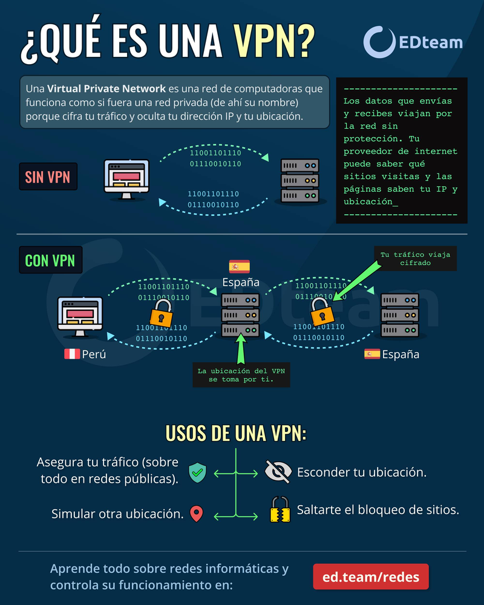
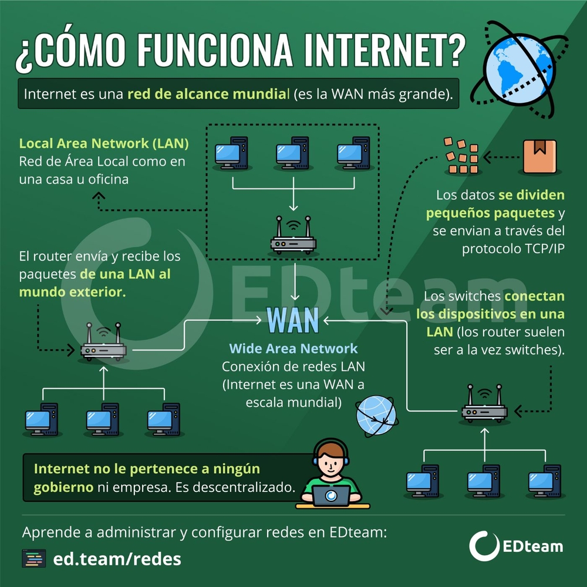
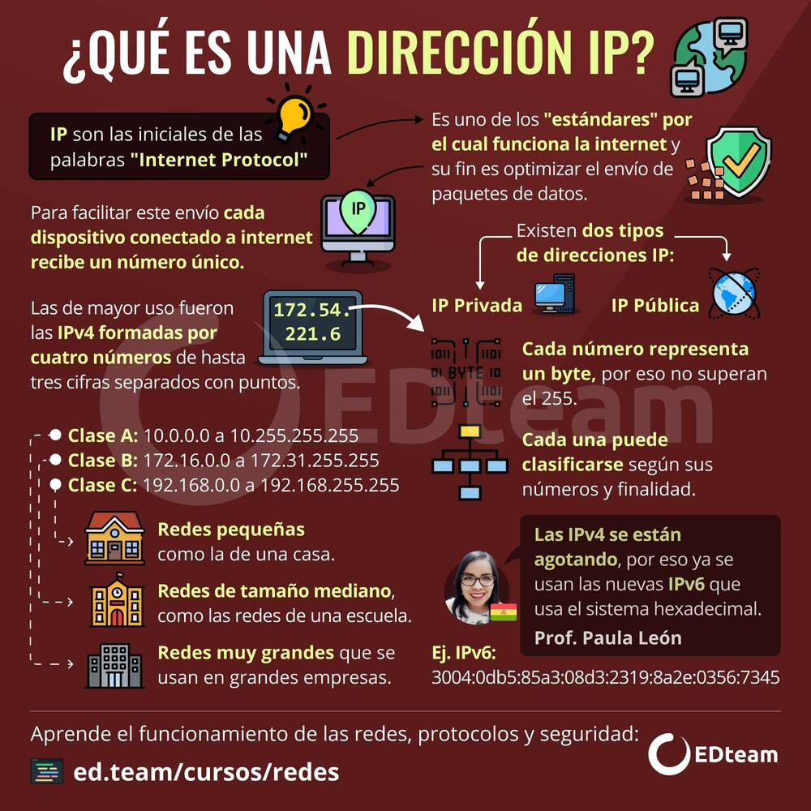

¿Qué es una VPN?
VPN son las siglas de Virtual Private Network, es decir, una red privada virtual. ¿Qué significa esto? las redes privadas son computadoras conectadas entre ellas pero que no tienen conexión al exterior. Sin embargo, a este en concepto se le agrega "virtual" porque una VPN simula ser una red privada a través de un software, por lo que realmente sí está conectada a Internet.

En resumen, estos son los usos de una VPN:
- Asegura tu tráfico (sobre todo en redes públicas)
- Esconde tu ubicación
- Simula otra ubicación
¿Cómo funciona Internet?
Internet es una gran red de ordenadores a nivel mundial, que pueden intercambiar información entre ellos.
Se pueden comunicar por que están unidos a través de conexiones telefónicas, cable, ondas u otro tipo de tecnología y gracias a que utilizan un lenguaje o protocolo común el TCP/IP, que son unas normas que nos dicen como tienen que viajar los datos por la red.

En resumen, internet funciona mediante la conexión de dispositivos a través de redes de comunicación, utilizando protocolos establecidos para enviar y recibir datos en forma de paquetes.
¿Qué es una dirección IP?
Una dirección IP es una dirección única que identifica a un dispositivo en Internet o en una red local. IP significa “protocolo de Internet”, que es el conjunto de reglas que rigen el formato de los datos enviados a través de Internet o la red local.

En esencia, las direcciones IP son el identificador que permite el envío de información entre dispositivos en una red.